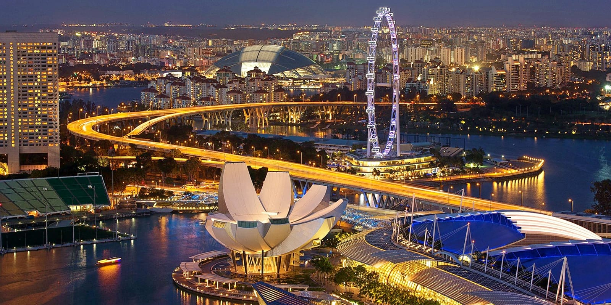
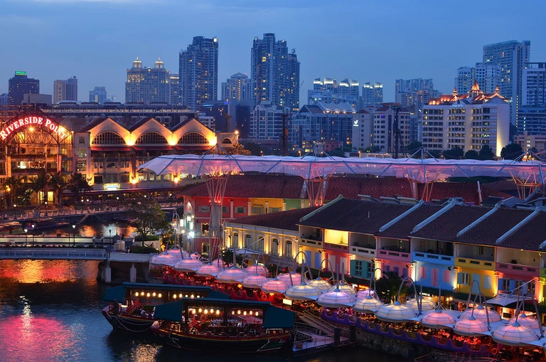
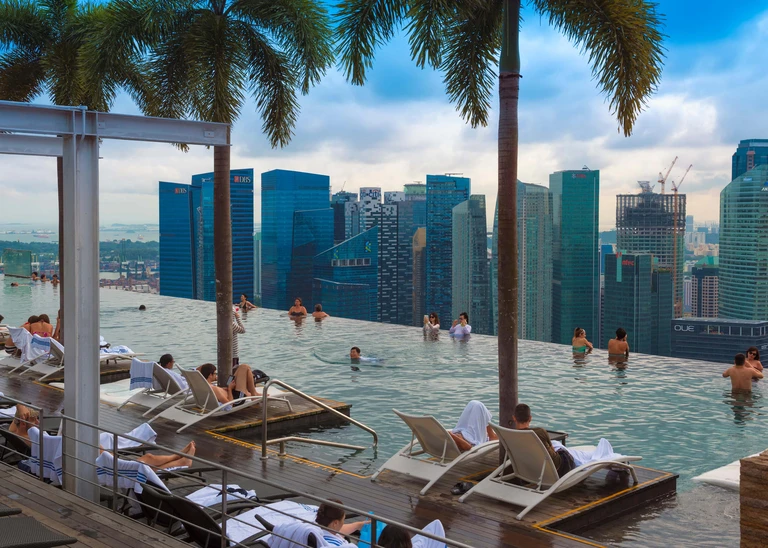
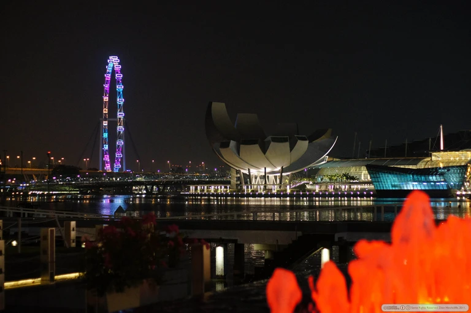
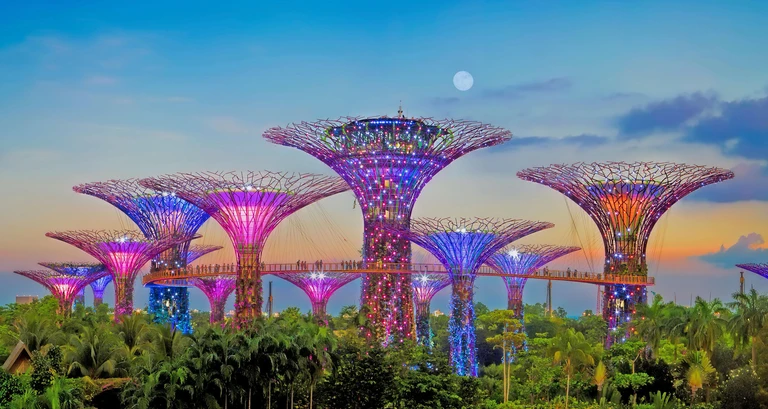
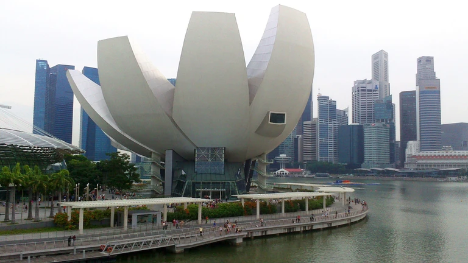
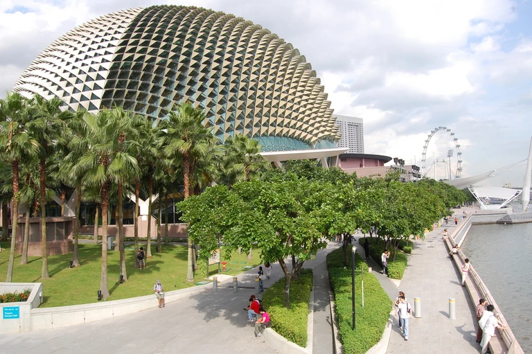

Singapore
Singapore is famous for being a global financial center, being among the most densely populated places in the world, having a world-class city airport with a waterfall, and a Botanic Garden that is a World Heritage Site. Singapore is known as a tourist destination and for its hot and humid climate, being very clean, and growing in area due to reclaimed land. The city-state is a shopper's paradise, besides the usual luxury brands sold in luxurious malls with luxury air conditioning, you can buy almost everything except chewing gum. Singapore is also known as "Instant Asia" because it offers visitors a quick glimpse of the Asian cultures that immigrants have brought from all parts of the continent.
Clarke Quay
Clarke Quay along the Singapore River is a place dotted with numerous places to spend your evenings. Looking for a pub that serves authentic American spirits or a microbrewery with its own range of beers? You’ll find it all here. The nightlife is varied and never-ending, ranging from quiet spots for intimate conversation to nightclubs that simply explode with sound. There’s also themed parties, night shows, boutique shops and an eclectic mix of patrons.
Marina Bay Sands Skypark
Marina Bay, with its astounding landscape, is considered the most sophisticated and beautiful place on the island. The Marina Bay Sands dominates the view with a triple tower hotel and the breathtaking broadside of the rooftop Skypark that connects three separate mega structures at the 57th floor. There is a spectacular light show at eight in the evening here. The sights include the beautiful Esplanade theater complex and the ArtScience Museum.
Singapore Flyer
The world’s largest observation wheel, the Singapore Flyer, is 30 meters taller than the London Eye and has a diameter of 150 meters. Make two trips – one during the day and one at night – to appreciate the view of Singapore’s downtown fully from up in the sky. Visitors have yet to decide which one is more spectacular.
Gardens by the Bay
A huge colorful and futuristic design, the Gardens by the Bay is one of the prime attractions of Singapore. The Supertree structure created provides the skywalk experience of a lifetime. Two oversized greenhouses create environments for the plants and fauna housed within, and will leave travelers with the distinct impression of having wandered into another world altogether.
ArtScience Museum Marina Bay Sands
The ArtScience Musem is impossible to miss, shaped in the form of a lotus as a sign of welcome to would-be visitors. A prime location for international touring exhibitions, the waterfall created by the building’s shape is the centerpiece of a place filled with many notable attractions. Check ahead to see what masterpieces might be gracing the walls when you’re in town.
Esplanade, Marina Bay
Built in 2002 at a cost of $600 million, this eye-catching complex is located on the bay, directly next to the Marina Bay Sands. It comprises eight main attractions, including a theater to seat 2,000 people and a 1,600-seat concert hall. There are also a number of smaller halls and studios for niche and private performances. It is known locally as ‘The Durian’ (jackfruit) because of its resemblance to the local – and famously pungent – tropical fruit.
